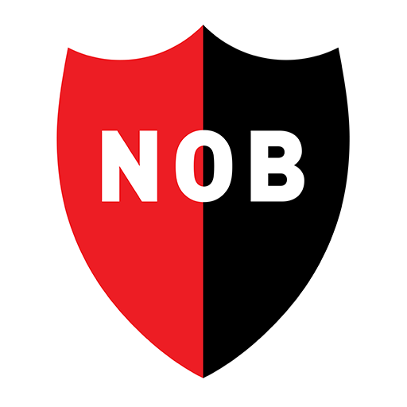
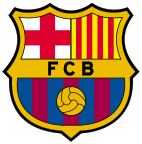
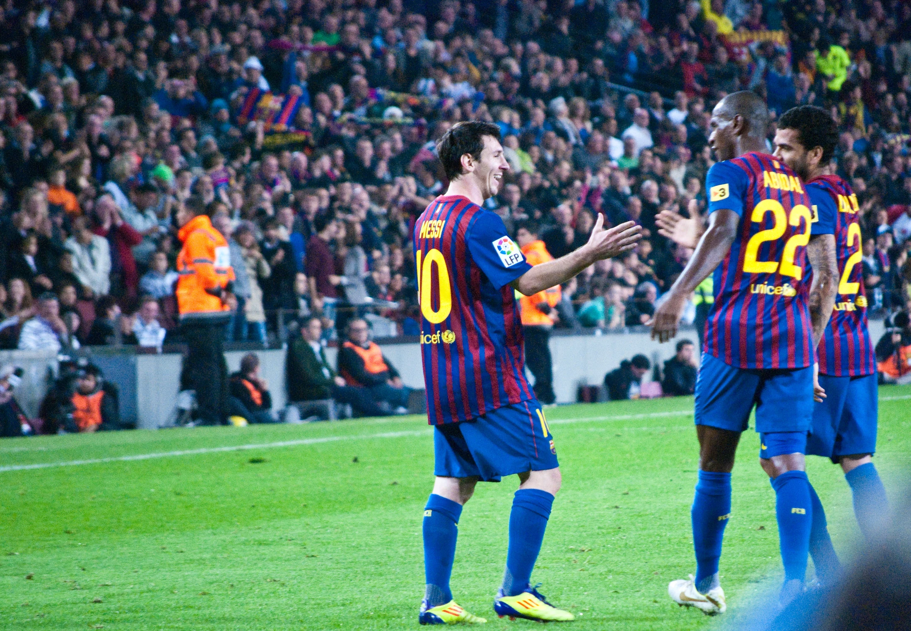
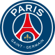
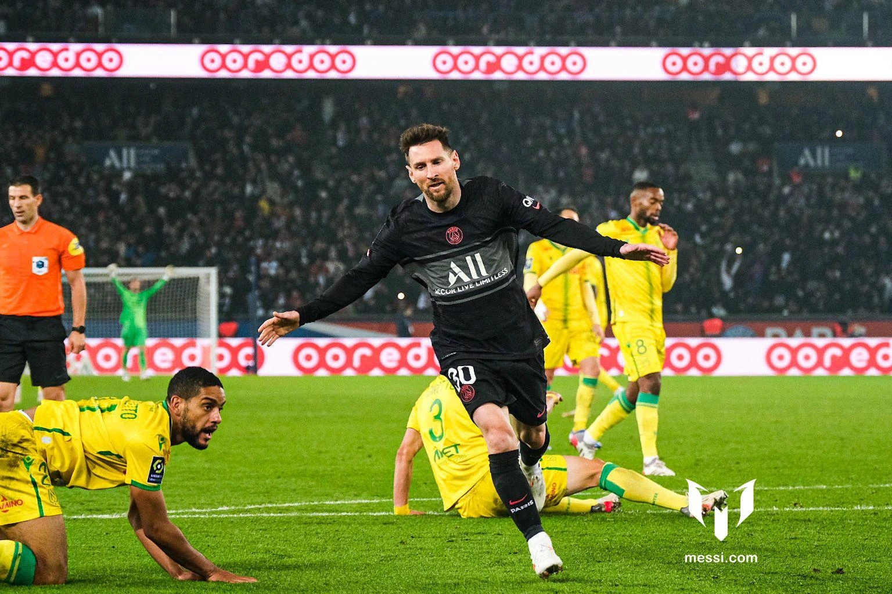
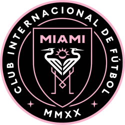
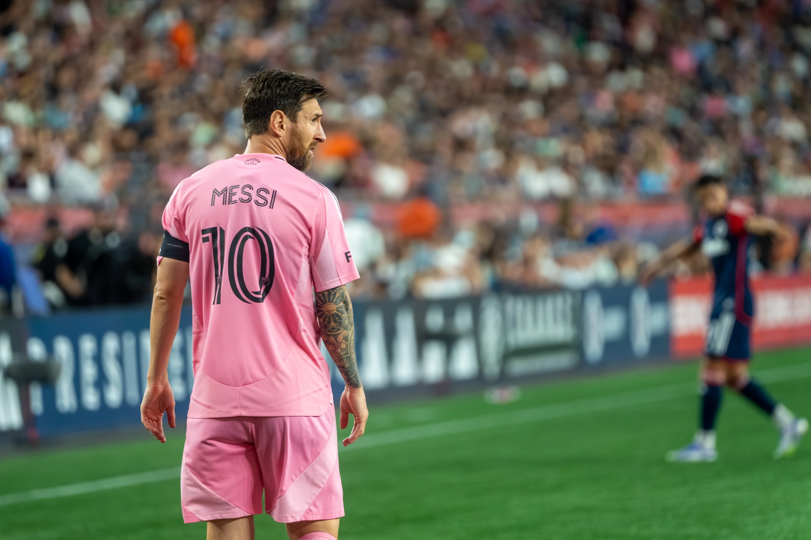

Carriera
Le squadre di Messi, dalle origini a Miami.
Le tappe principali
Apri una tappa per approfondire.

Newell’s Old BoysLe origini · Rosario
Messi nasce a Rosario il 24 giugno 1987. Comincia a giocare nel Grandoli e poi entra nel Newell’s Old Boys.
Il trasferimento a Barcellona avviene a tredici anni: una nuova città, il settore giovanile e un percorso lontano dalla famiglia. La Masia diventa il luogo della sua formazione calcistica.

FC Barcelona2000–2021 · Spagna
Cresce nella Masia e debutta ufficialmente in prima squadra nel 2004. Il suo percorso al Barcellona si conclude nel 2021.
Fra il debutto del 2004 e l’addio del 2021, Messi attraversa l’epoca di Ronaldinho, la squadra di Guardiola e il tridente con Neymar e Luis Suárez.
- 2004Debutto ufficiale in prima squadra.
- 2009Sei trofei con il Barcellona nello stesso anno.
- 2015Champions, Liga e Copa del Rey: un altro triplete.
- 2021Si conclude il capitolo blaugrana.
- Gol ufficiali
- 672
- Presenze in prima squadra
- 778
- Trofei con il club
- 35



Paris Saint-Germain2021–2023 · Francia
Gioca due stagioni a Parigi. Con il PSG vince due campionati di Ligue 1 e un Trophée des Champions.
Durante questo periodo conquista anche il Mondiale del 2022 con l’Argentina.
- Ligue 1
- 2 titoli
- Trophée des Champions
- 1 titolo
- Stagioni al PSG
- 2



Inter MiamiDal 2023 · Stati Uniti
Si trasferisce all’Inter Miami nel 2023. La Leagues Cup è il primo titolo conquistato con il club.
Il capitolo americano porta il suo calcio davanti a un nuovo pubblico.
Dopo la Leagues Cup arrivano il Supporters’ Shield nel 2024, la MLS Cup nel 2025 e la Campeones Cup nel 2026, secondo il palmarès ufficiale.

